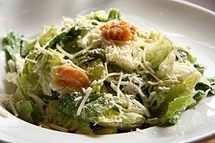
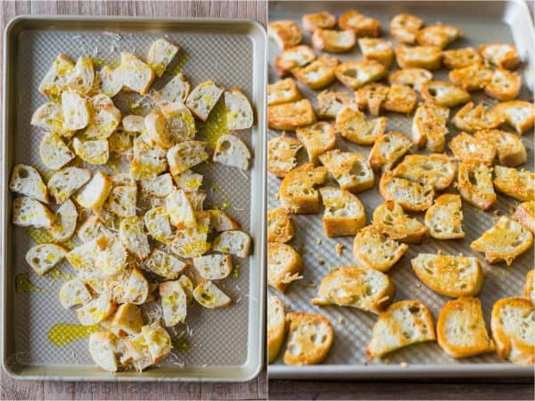
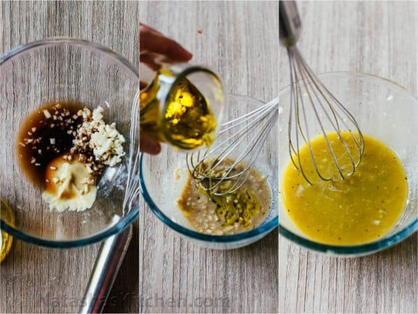
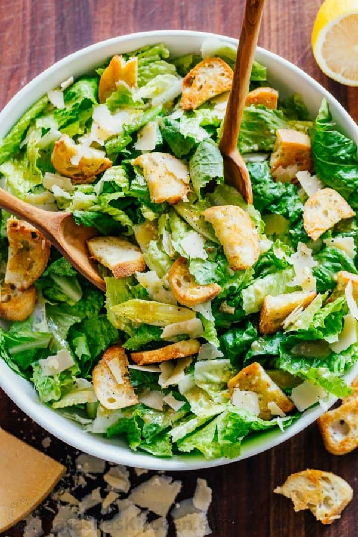

Caesar Salad

Description
Caesar salad is a green salad that became a true classic and a staple item on restaurant menus.
Ingredients
- 1 large head of romaine lettuce
- Shredded parmesan cheese (to taste)
- 1/2 a baguette for the croutons
- 1 1/2 tablespoons of extra virgin olive oil
- 2 clove of minced garlic
- salt, pepper, dijon, worcestershire sauce, lemon juice and red wine vinegar (to taste)
Steps
How to make the croutons
- Cut baguette in half lengthwise and slice into 1/4″ thick pieces and place on baking sheet.
- Combine 3 Tbsp extra virgin olive oil with minced garlic. toss breads with garlic infused oil and 2 Tbsp parmesan.
- Spread Evenly and Bake to desired crispness.

How to make Caesar dressing
- Whisk together minced garlic, dijon, Worcestershire, lemon juice and red wine vinegar.
- Whisking while adding oil emulsifies the dressing for a smooth and creamy (not oily) consistency.
- Season with 1/2 tsp salt and 1/8 tsp black pepper, or to taste.

Preparation
In a large mixing bowl, combine all of your ingredients and toss gently to coat the lettuce in caesar dressing.
